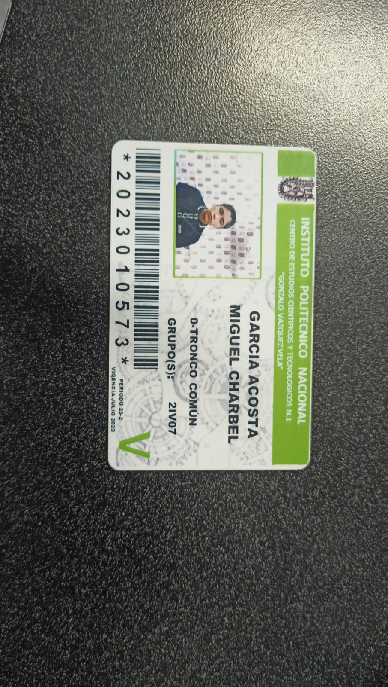

Jugar videojuegos.
Jugar Futbol.
Ver peliculas
Seguir aprendiendo a programar.
Estudiar Ingles.


Estado de méxico, Ecatepec,Jardines del Tepeyac,num.32
Garcia Acosta Miguel CharbelDurante los fines de semana mis actividades regulares son:
Jugar videojuegos.
Jugar Futbol.
Ver peliculas
Seguir aprendiendo a programar.
Estudiar Ingles.
Cobra kai:Cobra Kai es la secuela de la famosa saga cinematográfica
Karate Kid. La serie sigue la historia 30 años después del campeonato
de 1984, en el que Johnny no se encuentra en el mejor momento de su
vida por lo que decide volver a abrir el famoso Dojo Cobra Kai para
darle un giro.
Garcia Acosta Miguel Charbel